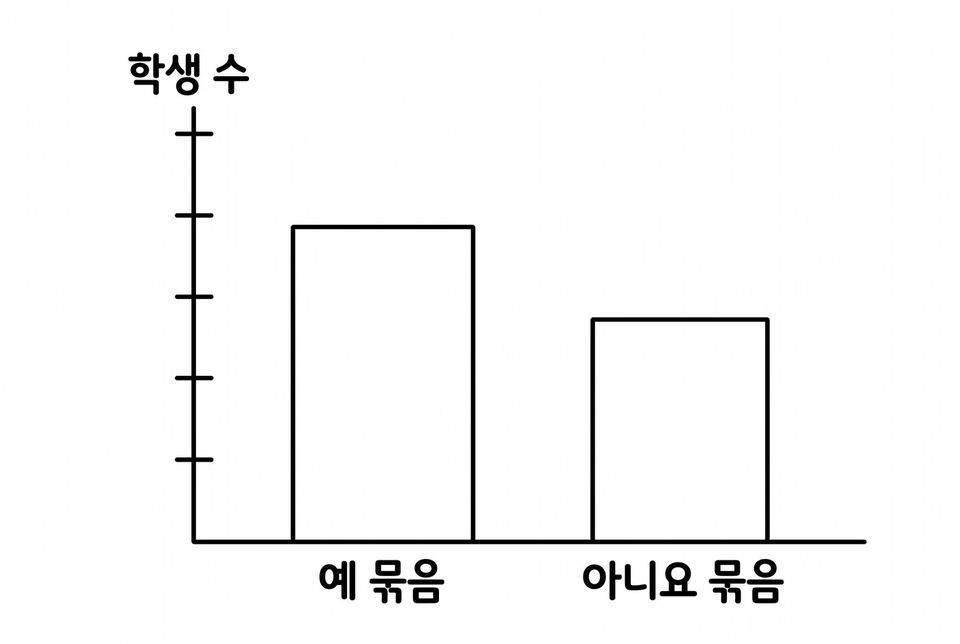
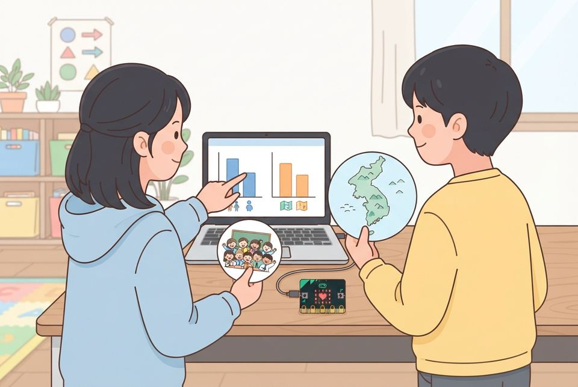

6학년 19~20차시 데이터로 학습하는 인공지능 [6실인공지능04-02]
우리 반 등교 자료를 기준을 세워 나누고 같은 자료로 학습시킨 숫자 분류 모델의 결과와 견주기
학습 문제 — 우리 반 등교 자료를 기준을 정해 나누고, 같은 자료로 학습시킨 AI의 분류와 견주어 봅시다.
개요
| 성취기준 | [6실인공지능04-02] 인공지능 모델이 학습 데이터의 공통점으로 새 데이터를 분류하는 과정을 체험하고, 학습 데이터의 양이 분류 결과에 영향을 줌을 안다. 연계 성취기준: [6실05-04], [06자율-6] |
|---|---|
| 핵심 역량 | 지식정보처리 역량, 협력적 소통 역량 |
| 핵심 기능 | ① 데이터 간에 공통되는 유형이나 형태 탐색하기 ② 예와 아니요로 갈리는 기준 세워 자료 나누기 ③ 같은 자료로 엔트리 숫자 분류 모델 학습시키기 ④ 사람의 분류와 AI의 분류 결과 견주기 ⑤ 목적에 맞는 기준을 근거 들어 고르기 |
| 가치 태도 | 생활 속의 여러 가지 데이터가 갖는 의미를 파악하는 자세 자료를 나눈 기준을 누가 정했는지 따져 보려는 자세 |
교수학습 활동
19차시 도입 동기 유발 · 학습문제 제시19차시 전개 활동1. 우리 반 등교 자료표 불러오기 · 활동2. 사람이 기준 세워 나누고 차트로 나타내기20차시 전개 활동3. 같은 자료로 AI 분류 모델 학습시키기 · 활동4. 목적에 맞는 기준 고르기20차시 정리 배운 내용 정리와 의뢰 해결 보고 · 다음 의뢰 예고
19차시도입8분
동기 유발
- 교사가 비밀 기준으로 나눈 학용품 두 무리 보고 기준 맞히기
- 안전 담당 선생님의 의뢰 읽기: “자전거·킥보드 거치대 자리 수를 자료로 알려 주세요”
- 오늘 미션: 사람이 먼저 나누고, 같은 자료로 AI에게도 나누게 하기

학습문제 제시
- 우리 반 등교 자료를 기준을 정해 나누고, 같은 자료로 학습시킨 AI의 분류와 견주어 봅시다.
준비물학용품 여섯 개(색·재질·크기가 섞이게)
자료자료 활동지, 의뢰 편지, [도입] 상황 그림
유의점앞 차시를 배우지 않은 학급은 자료 활동지 첫 칸의 항목 안내를 함께 읽는다.
유의점활동지 배부와 자리 정돈 시간을 도입 시간에 포함한다.
19차시전개32분
활동1. 우리 반 등교 자료표 불러오기 (10분)
- 아침에 이름 없이 답한 구글 폼 세 문항 살피기
- 문항: 등교 방법, 걸리는 시간(분), 건너는 횡단보도 수
- 엔트리 데이터 분석에서 테이블 불러오기의 웹 불러오기 고르기
- 교사가 알려 준 구글 시트 문서 ID로 ‘등교’ 표 불러오기
- 세 속성과 응답 수만큼 줄이 들어왔는지 살피기
활동2. 사람이 기준 세워 나누고 차트로 나타내기 (22분)
- 예와 아니요로 갈리는 기준 한 문장 적기(예: 15분보다 오래 걸리나?)
- 표에 ‘기준1’ 속성을 더해 줄마다 예·아니요 적기
- 등교 방법별 사람 수를 막대 차트로 그리기
- 짝이 나눈 결과만 보고 짝의 비밀 기준 맞히기
- 두 번째 기준으로 다시 나누어 묶음이 달라진 줄 표시하기
- 어느 묶음에도 맞지 않는 줄의 처리 방법과 까닭 쓰기

준비물필기구, 학생 기기
자료자료 활동지, 등교 구글 폼과 응답 시트, [활동2] 막대그래프 빈 틀 그림
유의점구글 폼은 이메일 수집을 끄고 이름·번호·사는 곳 문항을 두지 않는다.
유의점시트는 링크 보기 권한으로 수업 시간에만 열고, 수업 뒤 공유를 끈다.
유의점수업 전에 메뉴 이름과 시트 불러오기를 확인하고, 안 되면 교사가 준 예시 표를 쓴다.
유의점기준은 모둠에서 하나로 통일하지 않고 각자 정하게 한다.
유의점느린 학습자는 표 입력 도움 카드를 쓰고, 빠른 학습자는 원 차트로도 그려 견준다.
20차시전개33분
활동3. 같은 자료로 AI 분류 모델 학습시키기 (20분)
- 인공지능 모델 학습하기에서 숫자 분류 모델 고르기
- 불러온 ‘등교’ 표를 학습 데이터로 넣기
- 핵심 속성은 ‘걸리는 시간’·‘횡단보도 수’로 고르기
- 클래스 속성(이름표)은 ‘등교 방법’으로 고르고 모델 학습하기
- 새 자료 카드 세 장(가상의 전학생)을 넣어 AI가 고른 등교 방법 적기
- 같은 카드의 등교 방법을 내 생각으로도 맞혀 나란히 적기
- AI는 기준 문장 없이 숫자가 비슷한 자료를 보고 나눈다는 점 알기
활동4. 목적에 맞는 기준 고르기 (13분)
- 거치대 자리 수에 쓸 것을 사람의 기준과 AI 분류 가운데 고르기
- 고른 까닭을 목적과 이어서 한 줄 쓰기
- AI의 이름표(등교 방법)를 누가 정했는지 말하기
- 응답이 적은 등교 방법을 AI가 잘 맞히는지 살피기
- 도전: KOSIS 통학 수단 통계와 우리 반 비율을 차트로 견주기

준비물학생 기기, 새 자료 카드 3장(짝별)
자료기준 비교 활동지, 미리 받아 둔 통학 수단 통계 자료표(도전)
유의점모델 이름과 메뉴는 기능 설명형으로 적었으므로 수업 전에 엔트리 화면에서 확인한다.
유의점학생 기기에서 학습이 어려우면 교사 화면으로 함께 학습시키고 결과는 각자 적는다.
유의점자료는 바꾸지 않고 기준만 바꾸며, 하나의 기준을 옳은 답으로 정리하지 않는다.
유의점AI도 사람이 붙인 이름표로 배우므로 이름표를 정한 사람이 결과에 영향을 줌을 짚는다.
유의점도전에서는 우리 반 결과로 전국을 말하지 않고 출처와 조회 날짜를 남긴다.
유의점맞히기 점수나 짝의 답으로 개인 성취를 판단하지 않는다.
20차시정리7분
배운 내용 정리와 의뢰 해결 보고 (5분)
- 사람과 AI의 결과가 다른 카드 하나를 짝에게 설명하기
- 안전 담당 선생님께 보고하기: 거치대에 쓸 자료와 고른 까닭 한 줄 쓰기
다음 의뢰 예고 (2분)
- 보건 선생님의 다음 의뢰 알기: ‘손 씻기 코치’ 만들기
- 손목 마이크로비트에 손 씻기 동작을 학습시킨다는 점 알기
- 엔트리 작품을 저장하고 활동지 두 장을 정리해 제출하기
자료기준 비교 활동지
유의점폼 응답과 시트는 수업 뒤 지우거나 공유를 끄고, 엔트리 작품은 학급 밖으로 공유하지 않는다.
유의점쓰기가 어려운 학생은 구술로 확인하고 지원한 사실을 적는다.
유의점결석이나 미제출로 확인하지 못한 학생은 보충 확인 시점을 정한다.
평가 계획
인공지능 소양 · 분류 기준의 설정과 AI 분류 체험
같은 자료를 기준을 세워 나누어 표와 차트로 나타내고, 같은 자료로 학습시킨 AI의 분류 결과와 견주어 목적에 맞는 기준을 근거를 들어 고를 수 있는가?
| 수준 | 평가 기준 |
|---|---|
| 매우 잘함 | 두 기준을 예와 아니요로 갈리는 질문으로 쓰고 줄이 겹치지 않게 나누어 차트로 나타내며, 기준에 따라 달라진 줄과 어느 묶음에도 맞지 않는 자료의 처리 까닭을 쓴다. 같은 자료로 숫자 분류 모델을 학습시켜 새 자료 카드의 결과를 자기 판단과 나란히 적고, AI가 숫자가 비슷한 자료를 보고 나누며 이름표는 사람이 정했음을 설명한다. 목적에 맞는 기준을 목적과 이어서 고른다. |
| 잘함 | 두 기준으로 나누어 표나 차트로 나타내고 달라진 줄을 표시한다. 모델을 학습시켜 새 자료의 결과를 자기 판단과 견주어 적고, 목적에 맞는 기준을 고르되 까닭 설명이 간단하다. |
| 보통 | 두 기준으로 나누기는 하나 달라진 줄 표시나 차트 일부가 빠져 있다. 또는 AI의 결과를 적었으나 자기 판단과 견주지 못하거나, 목적과 기준을 잇지 못한다. |
| 노력요함 | 교사가 기준 질문의 예를 들어 주고 표를 하나씩 짚어 준 뒤에도, 자료를 두 묶음으로 나누거나 사람과 AI의 분류 결과를 견주는 데 어려움이 있다. |
| 미관찰 | 결석이나 미제출로 확인하지 못한 경우. 낮은 성취로 적지 않고 따로 기록한 뒤 보충 확인 시점을 정한다. |
평가 방법 활동지 분석 · 작품(표·차트·모델) 확인 · 구술 확인 · 관찰
연동 도구·링크
과정안에 나오는 도구가 저절로 걸립니다. 수업 전에 학교망에서 열리는지, 블록·메뉴 이름이 바뀌지 않았는지 확인하세요.
엔트리 ↗블록 코딩, 인공지능 블록, 데이터 분석(테이블·차트)계정: 학생 계정 없이 만들기 화면 사용 가능(저장은 교사 계정)엔트리 사용 설명서 ↗엔트리 안내엔트리 숫자 분류 모델 ↗표의 숫자 자료로 분류 모델 학습계정: 엔트리와 같음엔트리 데이터 분석(테이블·차트) ↗기본 테이블·학급 자료 불러오기, 차트계정: 엔트리와 같음KOSIS 국가통계포털 ↗전국 통계와 우리 반 자료 견주기계정: 필요 없음구글 폼 ↗이름 없는 학급 자료 모으기(교사 계정)계정: 교사 계정
내 수업 링크
학급 패들렛, 엔트리 작품, 활동지 주소처럼 이 차시에 쓸 링크를 걸어 둡니다. 이 브라우저에만 저장되고 밖으로 보내지 않습니다. 학생 이름이 든 주소는 넣지 마세요.